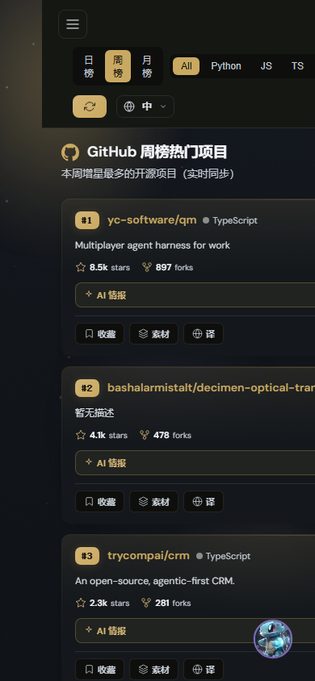

① 首页 · AI 工作台欢迎区
垂直聚焦 / 打字光标 / 遥测胶囊 / 卡片错落进场
- 去金框：2px 金色描边 → 1px 中性结构线，金色只留给状态与动作
- 渐变标题 → 纯色 + 呼吸光标，对抗 AI slop 观感
- 统计行 → 遥测胶囊，等宽字体仪表盘化
- 欢迎区垂直居中，消除下方死黑空间
② GitHub 热门 · 卡片色彩归位
Top3 金徽章 / 硬编码蓝紫清除
- Top3 排名：琥珀文字 → 金色填充徽章，排行榜仪式感
- topic 标签：硬编码天蓝 → accent 变量，随调色板统一迁移
- 卡片描边：硬编码金渐变 → accent color-mix
③ 推荐页 · 空状态重塑
从"虚线框告示"到"有呼吸感的留白"
- 虚线框 → 细实线 + 20px 圆角，顶部径向微光锚定视线
- 主按钮胶囊化 + 柔和金色投影
④ 移动端 390px · GitHub 热门
Top3 徽章 / 单列卡片层级
优化后（GitHub 页）
- 窄屏欢迎语自动换行，不再溢出
- prefers-reduced-motion 下自动关闭进场动画
⑤ 浅色模式 · 首页
中性边框同样生效，双模式一致的高级感
⑥ 用户画像 HUD 页 · 回归确认
独立 HUD 主题作用域，未受影响
- HUD 设计系统作用域独立（.profile-center-page），打磨层不侵入
- 左侧导航激活态：硬编码天蓝 → accent 软底 + 2px 指示条